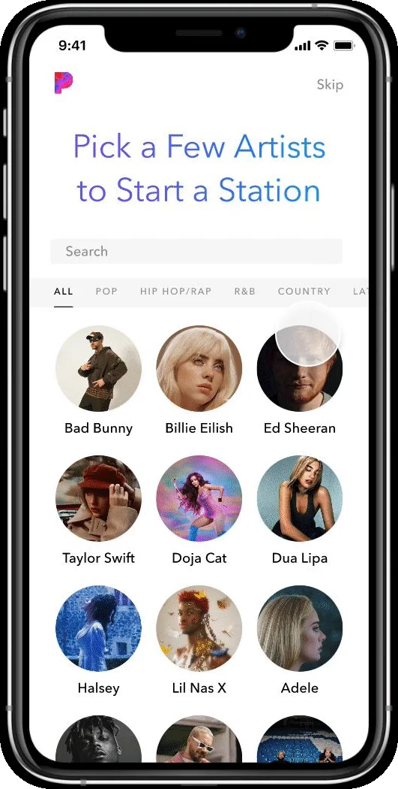
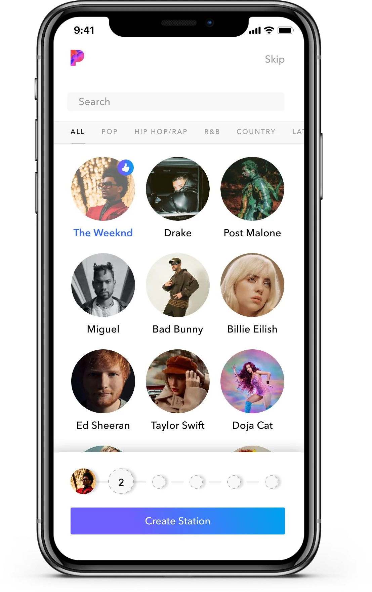

Make the first question pay off
When an AI needs to learn about a new user before it can help them, ask in a way that produces the first result on the spot, so the person gets value and the system gets context in the same minute.
Where it sits in the flow
- AskThe person has a question, or a thing they want to find.
- AnswerThe AI returns something: an excerpt, a marker, a segment, a generated answer.
- CheckThe person looks at the evidence and decides whether to believe it.
- DecideThe person acts: proceeds, moves on, or corrects the AI.
What users needed
New users of a recommendation product arrive wanting the thing, not a setup. In the research behind this pattern, they wanted to get to the result quickly, expected it to be personal from the start, and gave the product only a few seconds before deciding whether it was worth their time. A large share dropped out on the first day without ever using it, and the ones who did reach a result on day one came back far more often than the rest.
The problem
A recommendation system is only as good as what it knows about the person, and on day one it knows nothing. The usual answers are both bad: ask a questionnaire first, and most people leave before the end; skip the questions, and the first result is generic enough that most people leave after it. The product has to learn and give at the same time, in the attention span of someone who has not yet decided to stay.
The pattern
Turn the questions into the first act of using the product. Instead of a form about preferences, present a small set of concrete choices, in the form the product itself uses: the person picks a few of the things they already like, and the system turns those picks directly into its first result. Show how much is being asked, so the person knows it is a few taps and not a survey, and keep the way out in view for people who want to skip.
The context the system gathers is a side effect of the person getting what they came for.
What makes it hard
Every extra question improves the result and loses some of the people who would have seen it. The design has to find the smallest set of choices that gives the model enough to produce something personal, and it has to make those choices fast to make: recognizable options rather than abstract categories, search for the person who already knows, and a visible count so nobody wonders when it ends. It also has to work for the person who ignores all of it; skipping must lead somewhere useful.
When it fails
Ask for too much and the first-day drop-off comes back. Ask for too little and the first result is generic, which teaches the person the product is not for them. Ask in the product's vocabulary rather than theirs and the choices become homework. And if the first result does not visibly come from what they chose, the choosing feels wasted.
In my work
At Pandora I redesigned the onboarding for new listeners. Instead of a preference questionnaire, a new user picks up to six artists they like, from a grid of portraits or by search, and the recommendation system generates a personal station from those picks. The six picks are the shortest path I found to a station that feels like the person's own, and the design showed a progress bar of six slots and a visible "Create Station" button throughout. As Xinhua Net reported in its feature on my work, the redesign raised retention by 12 percent.
In pictures


Source
- When design serves hundreds of millions: how one designer helps complex systems truly work. Xinhua Net, February 3, 2026, in Chinese. Xinhua Net. A feature about my work at Pandora, Dynata and Amazon; the Pandora patterns on this site are my own English write-up of the onboarding work it describes.